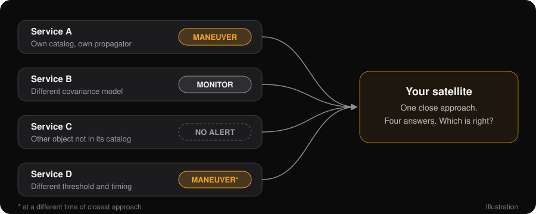

Collision avoidance
How Collision Avoidance Works
Every satellite operator asks the same question several times a day: will anything come too close? Here is how that question gets answered today, why the answers conflict, and why the problem gets harder with every launch.
Part one
The Routine
Collision avoidance is a loop that runs for every active satellite, every day.
- ScreenPropagate every catalog object a few days ahead and find each pair that comes within a set distance of a protected satellite.
- WarnSend the operator a conjunction data message (CDM): the time of closest approach, the miss distance, and both objects’ states and uncertainty.
- AssessCombine the two uncertainty regions into a probability of collision (Pc). Miss distance alone can’t tell a near miss from a non-event.
- DecideCompare Pc with the operator’s threshold, often around 1 in 10,000, and watch how it changes as newer tracking arrives.
- ManeuverPlan a burn that lowers the risk without creating a new close approach with something else.
- RescreenScreen the planned trajectory before the burn. An unscreened maneuver can move the risk to someone else.
Part two
The Collision That Changed The Routine
On 10 February 2009, Iridium 33, an operational U.S. communications satellite, hit Cosmos 2251, a decommissioned Russian communications satellite, 790 km above northern Siberia.2

What changed
It was the first accidental collision between two intact satellites. The orbital planes met at nearly a right angle, and neither object was being screened against the other. Afterward the U.S. military began screening every active satellite, not only its own, and sending warnings to their operators.
Space-Track.org, the public site that publishes the catalog and delivers those warnings, was rebuilt in the years that followed.1 Warnings became routine. Coordination did not.
Part three
Sharing By Agreement
The legal channel for sharing U.S. military tracking data with anyone outside the U.S. government is 10 U.S.C. § 2274.3
How it works
The Secretary of Defense may provide space situational awareness services to, and obtain data from, states, U.S. and foreign companies, and foreign governments. Each recipient must sign an agreement first. Well over a hundred companies, nations and intergovernmental organizations have signed.
What recipients agree to
Not to transfer any data or analysis received, including their own analysis of it, to any other entity without the Secretary’s express approval. The Department may also charge for the service.
How it evolved
Enacted in 2003 as a pilot, amended in 2006, 2008, 2009 and 2018. Since 1 January 2024, the Department shares only as far as national security requires; civil safety services are moving to the Department of Commerce.
Why it matters here
A system built on bilateral agreements and non-transfer clauses can deliver warnings. It cannot produce one shared picture that every operator can check.
Part four
Who Screens Today
Governments and companies around the world now run their own sensors, catalogs and screening services.
| Government and intergovernmental | What it does |
|---|---|
| U.S. Space Force (18th and 19th Space Defense Squadrons) | Maintains the U.S. catalog, publishes it on Space-Track.org and sends free conjunction warnings to operators worldwide. |
| U.S. Office of Space Commerce: TraCSS | The Traffic Coordination System for Space, taking over basic safety services for civil and commercial operators. |
| NASA CARA | Conjunction assessment for NASA missions. Publishes its methods and open-source Pc tools.4 |
| EU Space Surveillance and Tracking (EU SST) | A partnership of EU member states offering collision avoidance, reentry and fragmentation services. |
| European Space Agency | Collision avoidance for ESA missions and research into automated avoidance through its Space Safety programme. |
| UK National Space Operations Centre | Conjunction and reentry monitoring for UK-licensed operators. |
| France: CNES and Space Command | CNES’s CAESAR conjunction analysis service, and military surveillance including the GRAVES radar. |
| Germany: GSSAC | The German Space Situational Awareness Centre, run jointly by the air force and the German Aerospace Center. |
| Japan: JAXA and the Japan Air Self-Defense Force | Radar and optical tracking for Japanese satellites and national space domain awareness. |
| India: ISRO | IS4OM, ISRO’s system for safe and sustainable space operations, and the NETRA tracking project. |
| China: CNSA | The Space Debris Monitoring and Application Center, which screens Chinese missions and issues warnings. |
| Russia: Roscosmos | ASPOS OKP, the automated warning system for hazardous situations in near-Earth space. |
| United Nations COPUOS | Guidelines for the Long-term Sustainability of Outer Space Activities (2019). Guidance, not screening. |
| Commercial | What it does |
|---|---|
| SpaceX Stargaze | Star-tracker cameras on constellation satellites detect other objects. Free screening for operators that share their ephemerides. |
| LeoLabs | Ground phased-array radar network for low Earth orbit, with catalog and conjunction services. |
| Slingshot Aerospace | Global optical sensor network and a coordination platform for operators. |
| ExoAnalytic Solutions | A large network of optical telescopes, focused on geostationary orbit. |
| COMSPOC | Orbit determination and space situational awareness software and services. |
| Space Data Association | A consortium of satellite operators that pools ephemerides through its Space Data Center. |
| Kayhan Space | Conjunction screening and coordination between operators. |
| Privateer | Space situational awareness data and analytics. |
| NorthStar Earth & Space | Space-based optical tracking from its own satellites. |
| Digantara | Space-based tracking and space situational awareness services, based in India. |
| Neuraspace | Automated collision avoidance for operators, based in Portugal. |
| Aldoria and Look Up Space | French optical and radar tracking companies. |
| Vyoma | Space-based tracking, based in Germany. |
| Space Mapper | A Chinese commercial catalog with its own and international orbit products. |
Many of these services are very good. The problem below is not their quality. It is that there are many of them, and they don’t share a baseline.
Part five
The Fundamental Problem
Space traffic management needs one answer per close approach. Today an operator gets several.
Warnings that can’t be reconciled
Each service screens with its own catalog, its own propagator, its own covariance model, its own thresholds and its own probability method. Most of those are not fully open. When their warnings disagree, an operator cannot tell which one is right, because the inputs and algorithms behind them can’t be compared.

Every launch makes it harder
Every object has to be screened against every other. The number of pairs is N(N−1)/2, so it grows with the square of the catalog. Ten times the objects means a hundred times the pairs, and a hundred times the warnings that have to be triaged.
What can’t be disclosed still has to be screened
Some satellites are classified. Some maneuvers are commercial secrets until they happen. Neither appears in a public catalog in time to be screened, so other operators plan around trajectories that are about to change. That gap is where incidents come from.
Part six
An Open Baseline With Encrypted Screening
Services can keep competing on sensors, speed and analysis. What they need underneath is one baseline everyone can check, and a way to screen what can’t be shared.
One open catalog
Every source, digitally signed, with its uncertainty attached and the recipe that combined them. Two operators looking at the same event see the same inputs.
Open algorithms
Propagation and conjunction assessment run as open WebAssembly modules. Same inputs, same modules, same answer, on any node.
Encrypted conjunction assessment
Operators submit encrypted ephemeris for a classified satellite or a planned maneuver. The assessor computes on ciphertext and returns SAFE or ALERT. Nobody sees the orbit.
Notes
- The Space-Track.org site that served the catalog in 2013 was written by Anthony “TJ” Koury, co-author of the Evidence-Supported ASO Catalog whitepaper. Its archived page source names him as the author: open the 23 March 2013 capture and view the source (
view-source:https://web.archive.org/web/20130323001324/https://space-track.org/). - NASA Orbital Debris Program Office, “Satellite Collision Leaves Significant Debris Clouds,” Orbital Debris Quarterly News 13(2), April 2009.
- 10 U.S.C. § 2274, Space situational awareness services and information: provision to non-United States Government entities. Added by Pub. L. 108-136 (2003); amended by Pub. L. 109-364, 110-417, 111-84 and 115-232.
- NASA CARA Analysis Tools.